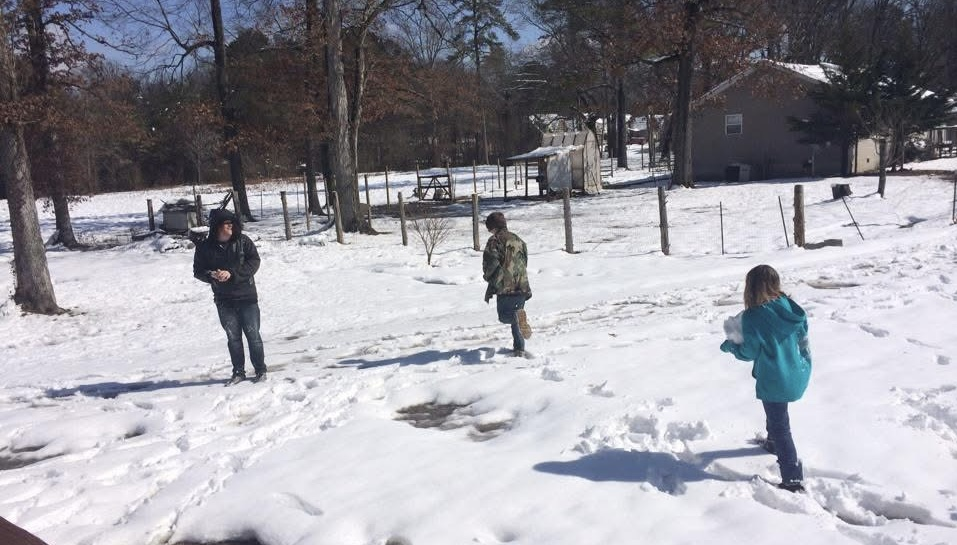
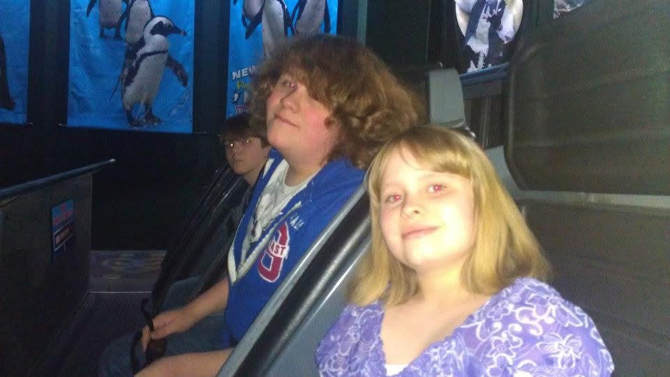

Matt and Josh
Matt is the oldest out of all of us, Josh and I are the middle kids, and Hunter is the youngest. Growing up, we were your typical siblings. We loved to argue and fight, but I love my brothers so incredibly much. Matt and I shared love for a lot of the same bands and artists. He even went with me to my very first concert. Josh would show me all of the games he liked playing at the time, and he would patiently help teach me how to play them. I remember playing Call of Duty with Josh, and I was not very good at it. No matter our differences in life, I know that I can count on them being there for me.

Hunter
Hunter was born when I was 13 years old. He made me a big sister! He's now 10 years old, and he's one of my best friends. He will sometimes call me, and we'll play a bunch of Roblox games together. The last time he came over to my home, we got to hang out and play Fortnite together. Hunter is a great friend, kind, and very smart. I'm proud to call him my little brother.

Oldest to Youngest
- Matt
- Josh
- Katelyn
- Hunter